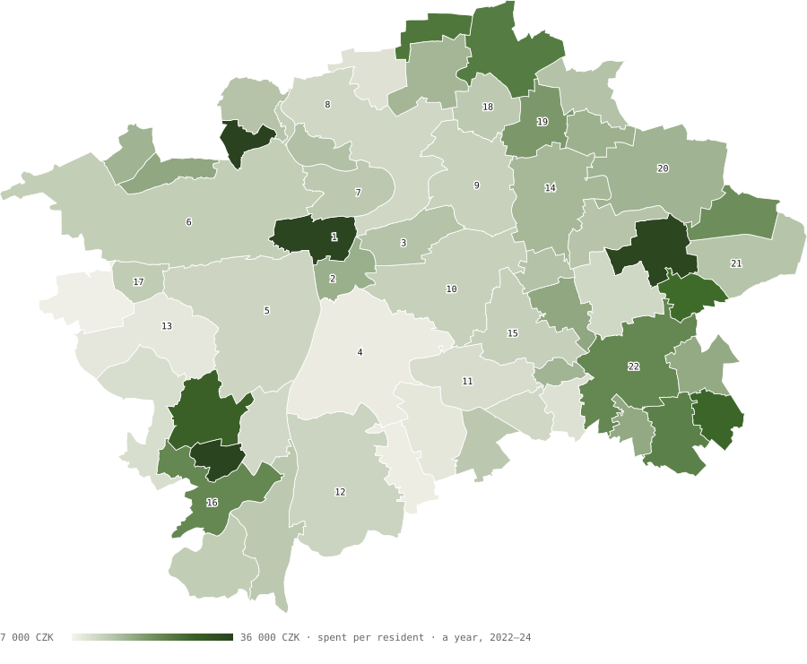
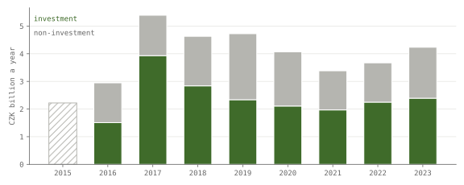
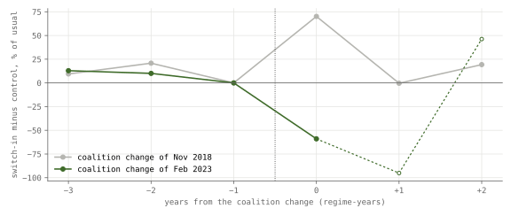
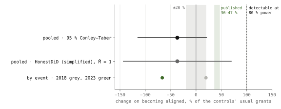
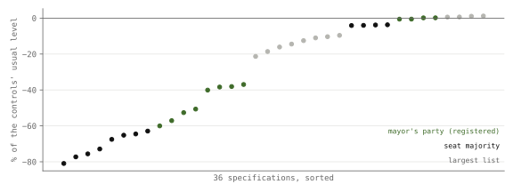

Research · Prague, measured, Part 3 · city grants to 57 districts, 2015–2023
Does a district get more city money when its mayor's party joins City Hall?
A premium in the city's in-year grants to Prague districts whose mayor's party joins the city coalition is not supported and underpowered: the test could detect only about 100 % or more, against 19–47 % reported elsewhere.
- smallest premium the design could detect
- ≈ 100 % or more at 80 % power (the test finds a true premium of that size four times in five) · simulated before this analysis was run, 75–150 % across scenarios, assuming three years after the 2023 change; the test as run has one, so its power is lower
- change on becoming aligned, H1
- −37 % of controls' usual grants · 95 % CI −115 to +21 % · p = 0.70
- the same, per resident
- −2 800 CZK a year · 95 % CI −8 800 to +1 800
- districts that became aligned
- 30 7 in 2018, 23 in 2023 · administrative count
Overwhelmed? Here's the short version
- No premium was detected for districts that joined the city's coalition (−37 % of usual grants, 95 % CI −115 to +21 %), but the test could only detect a premium of about 100 % or more, against 19–47 % reported elsewhere, so a premium of the usual size may exist unseen.
- The negative estimate comes from 2023, and it disappears without one control district (Troja) or without the districts with ODS mayors.
- The 2018 change alone gives +20 % (95 % CI −23 to +82 %, 7 districts), almost all from 2019; without the years next to the change it is −3 %.
- The plan was committed before the results; three later data corrections are listed in the change log.
- Two coalition changes cannot separate alignment from everything else those districts shared.
Photo: Richard Mortel from Riyadh, Saudi Arabia · CC BY 2.0, toned
_(26115184382).jpg){kind=link}
The question and what is known elsewhere
Discretionary transfers from a higher tier of government are where studies elsewhere have found an alignment premium, meaning that municipalities governed by the same party as the level above receive more. Studies of Spain1, Brazil (infrastructure transfers in pre-election years)2 and Italy3 are reported to find that aligned municipalities receive roughly a third to a half more (about 40 %, 26–41 % and 36–47 %), a study of Portugal finds 19 %4, and in Germany the sign depended on which bloc governed the state, with +25 % under one and −20 to −40 % under the other5. These magnitudes come from an audit of this study; the Brazilian and Portuguese ones match the papers' abstracts, and the others have not yet been checked against the papers' tables. Prague is a case these studies do not cover, a capital whose 57 districts elect their own mayors and councils and receive, besides a published formula allocation, grants that the city approves one by one during the year. This part asks whether a district receives more of those in-year grants when its mayor's party joins the city's governing coalition. The power simulation, run before this analysis, showed that the design could detect only a premium of about 100 % or more, two to five times the premiums reported elsewhere (19–47 %); it is underpowered, meaning that a premium of the usual size would most often go undetected. The study was run and reported anyway, under rules fixed in advance, so that the Prague result enters the record with its power stated whatever its sign.
Data
Prague runs on two levels. The city keeps public transport, the main roads and the city police, while its 57 districts, from Praha 4 with 135 712 residents to Praha-Nedvězí with 381, run most primary schools and kindergartens, local streets, green spaces and part of social services. Each district reports its accounts to the Ministry of Finance, which publishes them in MONITOR6. The ministry's bulk extract leaves the Prague districts out, so the district figures come from MONITOR's public interface, which serves the same reports, and money a district moves into its budget from its own funds (items 4131, 4132 and 4140) counts as its own revenue. Averaged over 2022–2024 and divided by residents at the end of each year7, the thirteen large districts, home to three Praguers in four, spend between 8 346 and 17 604 crowns a year per resident, and the 44 smaller districts, Praha 1 among them, spread from 7 763 (Praha-Zličín) to 35 540 (Praha-Lochkov), their figures often driven by single projects, with Praha-Lysolaje far above the rest at 73 020. Transfers from the city and the state are between 38 and 92 % of a district's income, and Praha 1 and Praha 2 are the only districts where they are less than half.

The table lists every district with the list that won the most seats in the 2022 district election8, which is not always the mayor's list, because a coalition of smaller lists can govern. Clicking a heading sorts the table, and the buttons pick large or small districts. In the thirteen large districts the town hall itself, meaning administration, the council and the office, takes a median 29 % of spending (24 to 38 %), education, above all kindergartens and primary schools, 32 % (18 to 42 %), social services 7.5 % (2 to 17 %) and investment of every kind 28 % (14 to 48 %). These shares compare how districts keep their books as much as what they spend on, since the same service can sit in different sections of different districts' accounts.
| District | Residents | Per resident | Town hall | Education | Social | Investment | From transfers | Largest list, 2022 |
|---|
Per resident: CZK spent a year, mean of 2022–2024. Shares are of spending, except "from transfers", which is of income. Residents at the end of 2024. Data: districts.json.
The grants study uses a different source. Part of the money the city sends its districts follows a formula it publishes each December, built from residents, area, pupils, green space and roads. The rest comes during the year as grants for a school roof, a park, a fire brigade or a playground, each approved by the city council or the city assembly and listed, with its resolution and purpose, in part III of the city's closing accounts9. The lists for 2014–2025 were downloaded and parsed, 18 311 lines in all, with at least 97.9 % of the item lines read in every list (the registered rule was 97 %). The outcome is the city's own grants. Money a district pays back to the city is left out, which covers loan repayments, returned grants and transfers, 162 lines and 1.1 billion crowns in 2016–2023, and so are grants the state passes through the city, EU operational programmes and the year-end settlements. Three kinds of money that are not discretionary in the usual sense stay in, as registered: income-tax refunds passed on to districts, 11–28 % a year of the city's own grants in 2016–2023, shares of the gambling levy, 4–10 %, and repayable loans, 1–13 %, together 20–39 % a year.
Beyond the formula, the city gives its districts 2.2 to 5.4 billion crowns a year in grants.

Beyond the formula, the city gives its districts between 2.2 and 5.4 billion crowns a year in this way, and investment is between 49 and 73 % of it (2016–2023). Over all district-years the median is 1.04 times the district's 2016 formula allocation, and in the median district the year-to-year spread is 60 % of its average, since a single school extension can arrive in one year.
How this was done
Each grant is dated by the resolution that approved it, matched by number to the session dates in the roll calls of Part 110, and that date decides which coalition the grant belongs to. Grants the outgoing, caretaker council decided up to 15 February 2023 count for the old coalition; the 112 grants (208 million crowns) approved on 16 February 2023, the day the new coalition was elected, count for the new one. A district's grants are measured against the formula money it received in 2016, so that a small district and a large one can be compared. The rules below were fixed in a design reviewed before modelling11.
A district is aligned in a year if its mayor on 30 June belongs to, or was nominated by, a party of the city coalition that day. Every mayor of every district from the 2014 elections to September 2026 was recorded with sources, double-coded by a language model and adjudicated by hand: the two passes named the same mayor for 98.9 % of the 627 district-years, and the seven that differed were settled before the grants were joined to the coding. Parties come from the official candidate registers8, and a data audit checked about 40 spells against official sources, all of which matched. The coalition changed in November 2018, when the Pirates, Praha Sobě and TOP 09 replaced ANO, ČSSD and the Greens, and in February 2023, when ODS replaced Praha Sobě. A district therefore becomes aligned only when parties change sides at city level, and the study can separate alignment from whatever else happened to one party's districts only as far as two events allow.
At each change, districts that turned aligned and stayed so are compared with districts unaligned throughout, before and after, in a difference-in-differences stacked by event12. In 2018, 7 districts turned aligned against 31 that stayed unaligned, and in 2023, 23 against 17, a change that made 34 of the 57 districts aligned, up from 14. There are 30 switching districts, but they switched because four parties entered the city coalition, and in 2023 essentially one (ODS), so the independent variation is closer to four party changes than to 30 districts, and the district-level p-values below should be read with that in mind. The p-values come from randomisation inference, which reshuffles which districts switched within each tier of districts, 9 999 times13, and the intervals use Conley–Taber intervals, a method for comparisons with few treated units14.
The estimand is the change in a district's grants on becoming aligned, stated in % of the control districts' usual grants, which are their average level in the three years before each change, averaged over the two changes. Because it is a linear difference between two groups divided by that level, its interval can reach below −100 % although no district can receive less than nothing; the same estimate on a per-resident scale is −2 800 crowns a year, with a 95 % interval from −8 800 to +1 800 (p = 0.67). A power simulation, run on the real switches before this analysis, put the smallest premium detectable at 80 % power at about 100 % of a district's usual grants. The design says in advance that a non-rejection is to be read as "not detected", never as "no premium".
The tests
| Hypothesis | Test | Result |
|---|---|---|
| H1 · districts that become aligned receive more of the city's own in-year grants | switch-in effect > 0 | not supported · underpowered −37 %, 95 % CI −115 to +21 %, p = 0.70 |
| H2 · any premium is carried by investment grants | investment effect > 0 and > non-investment | not supported p = 0.76 |
Percentages are of the control districts' usual grants in the years before each change. p-values are one-sided, from randomisation inference; the smallest attainable is 0.0001. Holm thresholds15 are 0.025 and 0.05 (with two tests, the smaller p-value must be below 0.025 and, if it is, the larger below 0.05, which keeps the chance of any false positive at 5 %), and neither test passes. The equivalence test (is any premium within ±20 %?) is inconclusive, p = 0.53.
Grants after the 2018 and 2023 coalition changes
Point estimates go both ways, up after 2018 and down after 2023; too few districts to see a consistent premium.

Before each change the gap between the two groups stayed within about 20 % of usual grants; the joint pre-trend test, which asks whether the groups were already drifting apart before the change, gives p = 0.97, but it has little power. The largest pre-change gap, +21 % in 2017, sets the HonestDiD bound in fig. 3. After the 2018 change, districts that turned aligned received more in the first year (+70 %) and about the same in the next two, which over the three years, against the three before, comes to +20 %. After the 2023 change they received less, −59 % against 2022 and −67 % against the three years before, and that change is tested on 2023 alone. Pooled, the change on becoming aligned is −37 % of the controls' usual grants, with a 95 % interval from −115 to +21 % (fig. 3), and H1 is not supported (p = 0.70).
Too few districts to tell: the interval runs from −115 % to +21 %, and the design could detect only a premium of about 100 %.

The equivalence test does not rule out a 20 % premium (upper side p = 0.11), nor a large shortfall. Thirty districts had a mayor elected as an ODS member or nominee at some point in 2016–2023, and ODS is the party that entered the coalition in 2023. Leaving all of them out turns the estimate to about +14 %, while leaving out the districts of any other party keeps it negative, between about −35 and −55 %, so the sign depends on the districts of the party that entered in 2023, and this design cannot say whether that reflects alignment or anything else those districts shared. A permutation that pretends other parties had entered the coalition instead places the observed result below 19 of the 20 possible sets (p = 0.95).
H2 expected any premium to come as investment, the visible kind of grant. The pooled shortfall is all in investment grants (−39 %), while non-investment grants changed by +2 %, and with no premium to split, H2 is not supported (p = 0.76).
Robustness
Six of 36 specifications are positive, and none is significant.

Six of the 36 specifications give a positive estimate, and none has a p-value below 0.05, whether from randomisation, the wild cluster bootstrap17 (which resamples the regression's residuals district by district) or small-sample clustered errors1819 (standard errors corrected for having few districts), though both are unreliable with so few switching districts. The definition of alignment moves the estimate most, and one control district, Troja, carries much of its negative sign. The table gives the registered checks.
| Check | Estimate | Inference |
|---|---|---|
| Registered H1 | −37 % | 95 % CI −115 to +21 %; p = 0.70 |
| Per resident instead of against 2016 formula money | −2 800 CZK a year | 95 % CI −8 800 to +1 800; p = 0.67 |
| Without loans, gambling-levy shares and tax refunds | −43 % | |
| As registered: money districts paid the city counted as negative grants | −36 % | |
| Alignment from recorded party membership (nominated non-members unaligned) | −36 % | |
| Alignment by seat majority in the district assembly | −63 % | |
| Aligned if the largest list includes a coalition party | −10 % | |
| Regression form (weights the two changes differently) | −13 % | clustered p = 0.68; wild bootstrap p = 0.64 |
| Estimator robust to effects that differ between switches20 | −14 % | 95 % CI −76 to +32 % |
| 2018 change alone | +20 % | 95 % CI −23 to +82 %; p = 0.16 |
| 2018 change alone, without the years next to it | −3 % | p = 0.59 |
| Placebo change, 2020 to 2021 | −18 % | p = 0.79 |
| Without the districts with ODS mayors | ≈ +14 % | other parties left out: −35 to −55 % |
| Without Troja (control district) | ≈ 0 % | no other district moves it by more than 9 points |
| Switch-out: 12 districts that left alignment (8 in 2018, 4 in 2023) against those aligned throughout (6 and 10) | −7 % | p = 0.50 |
| District side: unbudgeted in-year transfers in the districts' own reports, 2022–20256, 2023 change | −2 100 CZK per resident a year | p = 0.77; −2 200 adjusted for slower population growth |
Percentages are of the control districts' usual grants. Each change's own percentage is of its own controls' level, and the pooled one is of the average of the two levels, so −37 % is not the weighted average of +20 % and −67 %. The headline weights the two changes by their switching districts, while the regression form fits all years of both changes in one model and gives the 2018 change more weight, which is why it is less negative. Twelve further switches happened mid-term, outside the two changes; they enter only the heterogeneity-robust estimator. Data: districts_extended.json and districts_extended_robust.json.
What this means
For a councillor, city official or journalist asking whether the city's in-year grants favoured districts run by its own parties, the results are of two kinds. Measured, from the city's closing accounts, are the grants themselves: between 2.2 and 5.4 billion crowns a year beyond the formula. Inferred, from 30 switching districts in two coalition changes, is the change in a district's grants on becoming aligned: −37 % of the controls' usual grants, 95 % CI −115 to +21 % (p = 0.70), or −2 800 crowns per resident a year, 95 % CI −8 800 to +1 800. H1 is not supported, and the test is underpowered: the design could detect only a premium of about 100 %. The results neither show a premium nor exclude one: the equivalence test does not rule out a premium of 20 % (upper side p = 0.11). Nor do they show that alignment cost districts money. The sign depends on the districts with ODS mayors and on one control district, Troja, so the estimate describes these two coalition changes and cannot be read as an effect of alignment or of any party.
What this does not show
The city's lists record its grants to districts, and they do not record what the city builds in a district itself or through its companies, which is another channel through which a district can benefit. Two coalition changes, with one party's districts at the centre of the second, cannot separate alignment from anything else those districts shared. The design could detect only a very large premium, so a modest one, of the size found elsewhere, may exist and go unseen, and the 2023 change is measured over one year where three were planned. The mayor coding was done twice by the same language model and adjudicated by hand, which is not independent coding; it was checked against the candidate registers and, for about 40 spells, against official sources, but not yet against every constituent-session resolution. The size of the shortfall also depends on the scale. Measured per resident on a log scale, the same comparison gives about 0 %, and against 2016 formula money or per resident in crowns it is negative. No result here says anything about any individual mayor or councillor, and none is a causal effect of a party. Nor does the negative point estimate show that alignment costs a district money, since its interval runs from −115 to +21 %, the 2018 change alone points the other way (+20 %), and the placebo change from 2020 to 2021, when the coalition did not change at all, gives −18 %, a shortfall of a similar order.
Reproduction
The scripts are in tools/praha/ and run with uv on Python 3, each with the packages named in its docstring (pandas, numpy, openpyxl, xlrd, scipy; matplotlib for the figures). Raw downloads are cached in tools/data/praha3/ and tools/data/praha3x/ (set PRAHA3X to move the second), are not committed, and can be checked against prague-districts-files.sha256. MONITOR is read through https://monitor.statnipokladna.gov.cz/api/. The alignment coding is in docs/research/. The run order is:
districts.py: the descriptive budgets, 2022–2024, intodistricts.jsondistricts_data.py: MONITOR, ČSÚ and election downloads, 2015–2025districts_city.py: the city's closing accounts and approved budgetsdistricts_grants.py --structure, then--build: the grant lists intogrants.csvdistricts_alignment.py: the frozen alignment paneldistricts_power.py: the design-stage power simulationdistricts_extended.py: the registered tests, intodistricts_extended.jsondistricts_robust.py: the checks and the specification curvefigures_districts_extended.py: the static figures
References
- Solé-Ollé, A., Sorribas-Navarro, P. (2008). The effects of partisan alignment on the allocation of intergovernmental transfers. Differences-in-differences estimates for Spain. Journal of Public Economics 92(12), 2302–2319.
- Brollo, F., Nannicini, T. (2012). Tying your enemy's hands in close races: the politics of federal transfers in Brazil. American Political Science Review 106(4), 742–761.
- Bracco, E., Lockwood, B., Porcelli, F., Redoano, M. (2015). Intergovernmental grants as signals and the alignment effect: theory and evidence. Journal of Public Economics 123, 78–91.
- Migueis, M. (2013). The effect of political alignment on transfers to Portuguese municipalities. Economics & Politics 25(1), 110–133.
- Baskaran, T., Hessami, Z. (2017). Political alignment and intergovernmental transfers in parliamentary systems: evidence from Germany. Public Choice 171(1–2), 75–98.
- Ministerstvo financí (2026). MONITOR státní pokladny: budget reports (FIN 2-12 M) of each city district, 2022–2025 (earlier years are empty for the Prague districts), approved, amended and actual figures at 31 December. monitor.statnipokladna.gov.cz, read through its public API. Accessed 28 September 2026.
- Český statistický úřad, Prague office (2026). Obyvatelstvo Prahy podle městských částí 1991–2025, table CR_L3_MC, residents at 31 December. csu.gov.cz/pha/casove-rady-lide. Accessed 28 September 2026.
- Český statistický úřad (2026). Municipal elections 2014, 2018 and 2022: open data and candidate registers, lists with votes and seats in each district assembly (2022 register of 28 March 2026). volby.gov.cz. Accessed 28 September 2026.
- Hlavní město Praha (2015–2026). Zpráva o plnění rozpočtu a vyúčtování výsledků hospodaření hl. m. Prahy, 2014–2025, part III (městské části), and approved budgets with the tables of financial relations to the districts, 2016–2026. praha.eu/zpravy-o-plneni-rozpoctu. Accessed 28 September 2026.
- Šandová, B. (2026). Do Prague's councillors vote against less, term after term? Prague, measured, Part 1. bsandova.com. Accessed 29 September 2026.
- Šandová, B. (2026). Part 3 research design, pre-specified version 2 with dated changes. GitHub, docs/research/prague-districts-design.md. Accessed 29 September 2026.
- Cengiz, D., Dube, A., Lindner, A., Zipperer, B. (2019). The effect of minimum wages on low-wage jobs. Quarterly Journal of Economics 134(3), 1405–1454.
- Wu, J., Ding, P. (2021). Randomization tests for weak null hypotheses in randomized experiments. Journal of the American Statistical Association 116(536), 1898–1913.
- Conley, T. G., Taber, C. R. (2011). Inference with "difference in differences" with a small number of policy changes. Review of Economics and Statistics 93(1), 113–125.
- Holm, S. (1979). A simple sequentially rejective multiple test procedure. Scandinavian Journal of Statistics 6(2), 65–70.
- Rambachan, A., Roth, J. (2023). A more credible approach to parallel trends. Review of Economic Studies 90(5), 2555–2591.
- Webb, M. D. (2023). Reworking wild bootstrap-based inference for clustered errors. Canadian Journal of Economics 56(3), 839–858.
- Bell, R. M., McCaffrey, D. F. (2002). Bias reduction in standard errors for linear regression with multi-stage samples. Survey Methodology 28(2), 169–181.
- Pustejovsky, J. E., Tipton, E. (2018). Small-sample methods for cluster-robust variance estimation and hypothesis testing in fixed effects models. Journal of Business & Economic Statistics 36(4), 672–683.
- de Chaisemartin, C., D'Haultfœuille, X. (2020). Two-way fixed effects estimators with heterogeneous treatment effects. American Economic Review 110(9), 2964–2996.